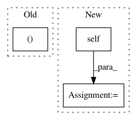

429267c276222ec57fa622039cdcc033379d9f97,stellargraph/layer/gcn.py,GCN,node_model,#GCN#,232
Before Change
if filter == "chebyshev":
self.support = self.kwargs.get("max_degree", 2)
suppG = [
Input(shape=(None, None), batch_shape=(None, None), sparse=True)
for _ in range(self.support)
]
else:
After Change
suppG = [Input(batch_shape=(None, None), sparse=True)]
x_inp = [x_in] + suppG
x_out = self(x_inp)
return x_inp, x_out
def link_model(self, flatten_output=False):
In pattern: SUPERPATTERN
Frequency: 3
Non-data size: 3
Instances
Project Name: stellargraph/stellargraph
Commit Name: 429267c276222ec57fa622039cdcc033379d9f97
Time: 2019-02-06
Author: wangzhen263@gmail.com
File Name: stellargraph/layer/gcn.py
Class Name: GCN
Method Name: node_model
Project Name: dpressel/mead-baseline
Commit Name: 509453992838a524f6442d4e0f07a034390ae1f7
Time: 2020-02-13
Author: dpressel@gmail.com
File Name: layers/eight_mile/tf/layers.py
Class Name: CRF
Method Name: neg_log_loss
Project Name: williamFalcon/pytorch-lightning
Commit Name: 8e9a026bc34d8409faa572a7144c2d96a7c039ed
Time: 2021-02-11
Author: rohitgr1998@gmail.com
File Name: tests/models/test_grad_norm.py
Class Name: ModelWithManualGradTracker
Method Name: training_step